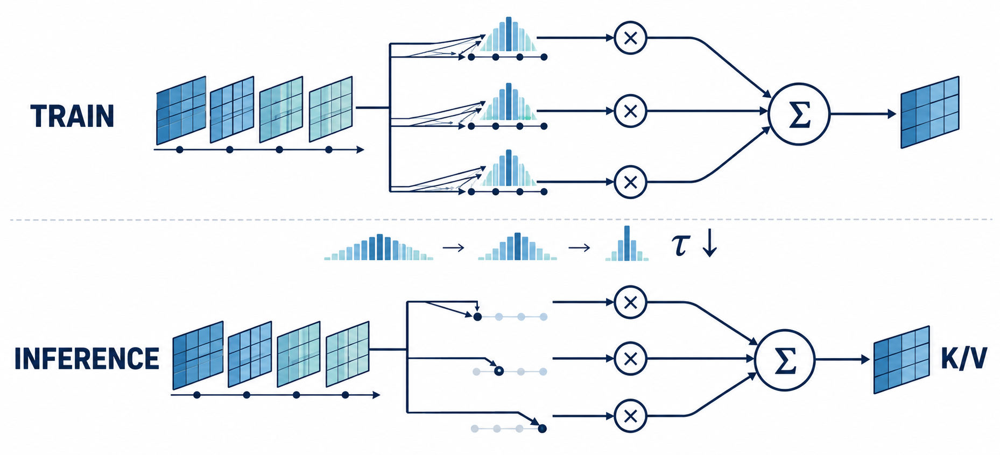
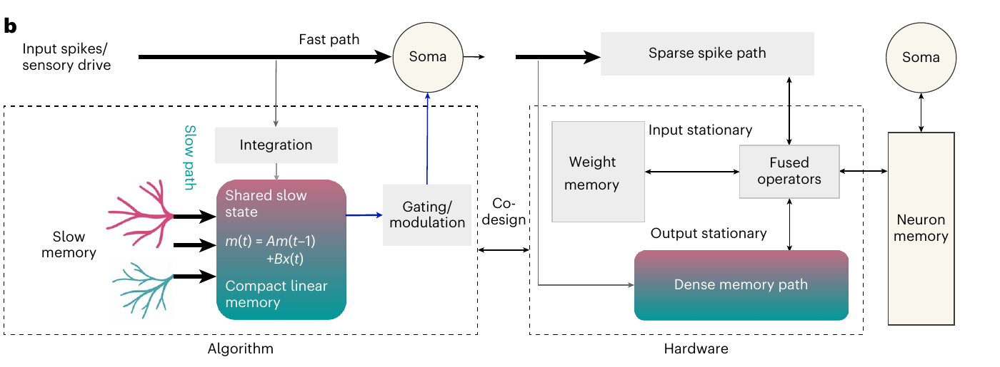
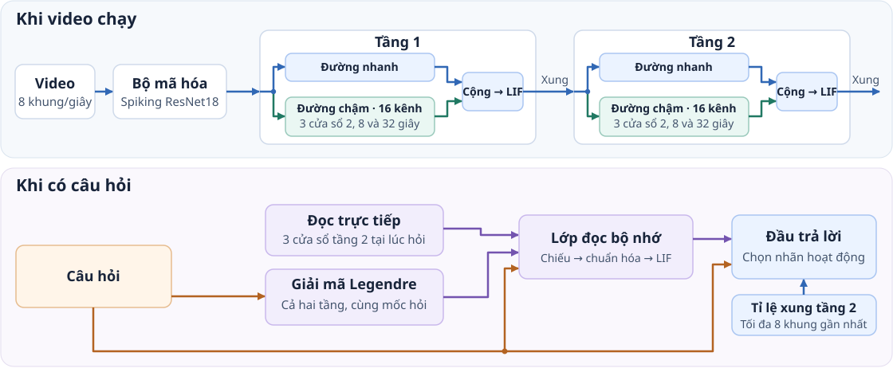

Nâng cấp DMP-SNN, so sánh với Mixer-SNN trên bài toán hỏi đáp về quá khứ của video
“Cách đây 29 giây đang có hoạt động gì?”
Đáp án: Dắt chó đi dạo, bằng chứng là đoạn 0,0–2,9 giây

Đoán bừa: 9,4%

| Mixer-SNN | DMP-SNN | |
|---|---|---|
| Cơ chế nhớ | Điện thế màng nơ-ron | Bộ nhớ Legendre, đầu vào 1 số |
| Nhớ sự kiện 16–32 giây trước | 7,8% | 20,0% |
| Tốt nhất sau khi dò tham số (test) | 34,5% | 28,4% |
| Vấn đề chính | Quên nhanh | Nhớ được nhưng mờ |
Bộ nhớ nhận 16 kênh thay vì 1 số
3 cửa sổ 2, 8 và 32 giây: vừa chi tiết gần, vừa nhớ xa
Câu hỏi đọc thẳng vào bộ nhớ qua một lớp nơ-ron xung
Giải mã bộ nhớ tại đúng thời điểm được hỏi bằng đa thức Legendre

| Tập | Nhóm | Số clip |
|---|---|---|
| Train | g11–g25 | 1.939 |
| Validation | g08–g10 | 398 |
| Test | g01–g07 | 918 |
| Câu hỏi | Đáp án | Đoán bừa |
|---|---|---|
| Cách đây N giây đang có hoạt động gì? | 1 trong 24 | 4,2% |
| Ở giây thứ T đang xảy ra hoạt động gì? | 1 trong 24 | 4,2% |
| Trong 4 hoạt động này, hoạt động nào đã xuất hiện? | 1 trong 4 | 25% |
| Ngay sau lần gần nhất có X là hoạt động gì? | 1 trong 24 | 4,2% |
Bằng chứng luôn nằm trong đoạn đã kết thúc, nên không thể trả lời bằng cách nhìn khung hình hiện tại.
| Mô hình | Small | Spiking ResNet18 | Tăng |
|---|---|---|---|
| Nâng cấp | 43,8% | 56,6% | +12,8 |
| Mixer-SNN | 28,8% | 33,9% | +5,1 |
| DMP-SNN | 23,9% | 26,1% | +2,2 |
Test. Với Spiking ResNet18: 60 epoch, câu hỏi có thêm đồng hồ hiện tại, áp dụng cho cả ba.
| Mô hình | Tham số | Validation | Test |
|---|---|---|---|
| Nâng cấp (DualMemoryPlus) | 0,83M | 63,7% | 61,6% |
| Nâng cấp, nén hạng 64 | 0,55M | 63,7% | 61,2% |
| CNN tốt nhất | 2,85M | 64,1% | 61,5% |
| Mixer-SNN | 0,82M | 37,4% | 34,5% |
| DMP-SNN | 0,34M | 31,7% | 28,4% |
Đoán bừa 9,4% · Mức trần của bộ mã hóa 74,7%
| Sự kiện cách đây | 0–4 giây | 4–8 giây | 8–16 giây | 16–32 giây |
|---|---|---|---|---|
| Nâng cấp | 62,1% | 65,4% | 60,2% | 63,0% |
| Mixer-SNN | 58,3% | 52,4% | 22,0% | 7,8% |
| DMP-SNN | 34,8% | 34,0% | 26,9% | 20,0% |
| Bản gốc | Nén hạng 64 | |
|---|---|---|
| Tham số | 831.544 | 551.992 |
| Validation | 63,73% | 63,68% |
| Test | 61,64% | 61,17% |
| Sự kiện 16–32 giây | 62,99% | 62,94% |
| Kích thước file | 3,53 MB | 2,41 MB |
| Mô hình | Tham số | Bộ nhớ trạng thái | Sự kiện 16–32 giây | Test |
|---|---|---|---|---|
| CNN 192 kênh | 0,79M | – | 38,6% | 48,8% |
| CNN 384 kênh | 2,71M | – | 39,6% | 47,9% |
| CNN 512 kênh | 4,64M | – | 37,0% | 47,4% |
| CNN 384 kênh + bộ đệm toàn bộ quá khứ | 2,85M | 16.384 số | 63,6% | 61,5% |
| Nâng cấp (SNN) | 0,83M | 960 số | 63,0% | 61,6% |
| Nâng cấp, nén hạng 64 | 0,55M | 960 số | 62,9% | 61,2% |
Đã đạt 82% mức trần
Thêm kênh chuyển động giống camera sự kiện, mạng lớn hơn, cửa sổ dài hơn để nâng mức trần
Ghi lại mỗi lần hoạt động thay đổi để trả lời “ngay sau X”
Nhận video bất kỳ từ camera hoặc file tải lên
Đưa lên chip nơ-ron xung để tiết kiệm năng lượng
Đặng Thị Ngọc Thảo · Đặng Nguyễn Hữu Huy